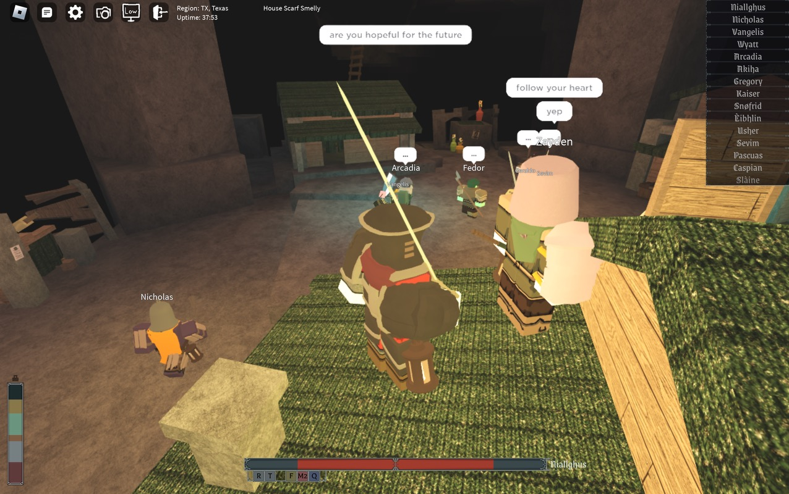

Are the kids on Roblox alright?
The site I chose was Roblox, which is an online game and game creation platform where users can gather in a virtual world and interact with one another and play games together. This platform interested me because I saw it as a platform that was inviting for all; unlike other games from the examples, this game was more relatively accessible and required little to play. Most people nowadays have access to an internet device like a phone or a laptop. Roblox being both a web app and mobile app opens its market to so many other players, in addition to how easy it is to learn how to play, versus a game like Overwatch, World of Warcraft, League of Legends, etc. where there is more competition and a steeper learning curve. What also interested me about this platform was honestly how “random” it was in the sense that whenever I had heard news online, it would be a plethora of different things from meme games based on pop music, to protests that players under 18 would stage because they were not old enough to attend real protests. I thought it was the perfect platform to get a sample of today’s “developing” population, and with the average age of a Roblox player mostly between 17-24, and the vast majority (around 75%) of players under 25 it was the ideal platform for me to use.
I did not know the age distribution when playing but my intervention intended to ask players two questions: Do you believe in true love? and Are you hopeful for the future?. I wanted to know, are the kids alright? After all that we (me being in the same age group) had gone through, with the older end experiencing many financial collapses, and the younger ones experiencing the pandemic and lockdown, we all really had “lived through history book events”, or historically altering events. I would log in periodically in the afternoon (3-5pm) and late at night (10pm-2am) within a span of a week and enter different rooms/games and find crowds of people to ask these questions.
I found that most people gave me simple answers, “yes”, “no” some variation of these answers with a vast majority seeming positive. I wasn’t really expecting some deep and heart wrenching/heartwarming answers because it was a stranger online, but who knows if I kept on asking different people I could definitely get some “deep” answers. If I had more time to expand, I would definitely ask more people, and also find more niche audiences to ask.
From what I had seen, the kids are definitely ok, but also who knows? I think that social media and the Internet is definitely messing with a lot of people’s social skills and ideas of the future since it is a different Anthropocene with how people act and treat each other. I was pleasantly surprised to see positive answers. But also, after going to the zoo and seeing people “in action” or hearing friends talk about being in the food service and interacting with customers, it really was surprising to see the duality of how people are online and in person (and especially drivers and customers and how reckless and rude they can be).